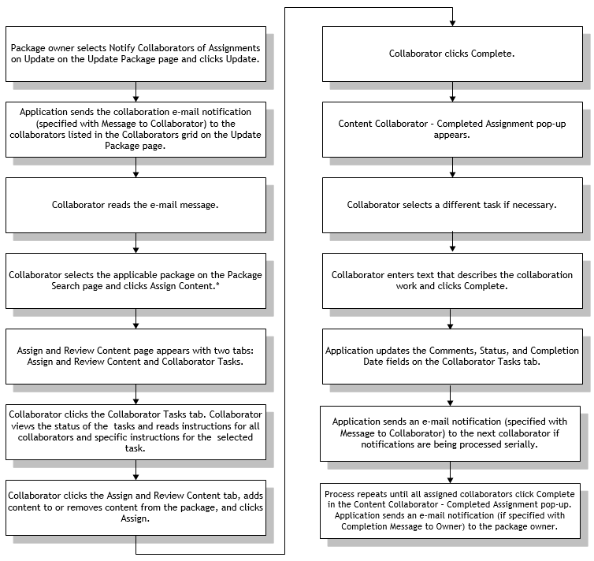

Understanding Content Collaboration
Content collaboration enables a package owner to distribute the work of assigning content to a package to multiple employees (collaborators). Package owners can specify which employees they want to collaborate on the package content.
A system administrator must configure some objects in Modeling specific to change management content collaboration before the package owner enables collaboration. The objects that must be configured depend on whether the package owner will notify collaborators of their collaboration assignments through e-mail, and whether a predefined collaborator template and global settings will be used.
Refer to the Opcenter Execution Medical Device and Diagnostics Modeling User Guide or the Opcenter Execution Core Modeling User Guide for information on all modeling objects.
Required Configuration
A system administrator must perform the following:
| • | Define or update employee modeling object instances for collaborators to include a role with collaborator permissions. |
| • | Define or update employee modeling object instances for package owners to include a role with ownership permissions. |
Optional Configuration
A system administrator can perform the following:
| • | Define a collaborator template using the Collaborator Template modeling object. The template enables you to predefine collaborators and any instructions you want to provide to them. |
| Note: | The package owner can add collaborators and their instructions manually inthe application whether the system administrator defines a collaborator template or not. |
Required Configuration if Setting Up E-Mail Notifications
A system administrator must perform the following when setting up e-mail notifications:
| • | Define the SMTP transport to be used for collaborator and package owner e-mail notifications. |
| • | Define or update a factory modeling object instance to include the following: |
| • | SMTP transport defined for e-mail notifications |
| • | Define or update employee modeling object instances to include the following: |
| • | E-mail addresses where the employees will receive collaborator notifications and where the package owner will receive package owner notifications |
| • | Factory where the SMTP transport is associated |
| • | Define e-mail messages for collaborators and the package owner using the E-mail Message modeling object. Messages to collaborators enable the package owner to notify collaborators that they can assign content to the package. Messages to the package owner enable collaborators to notify the package owner when they are finished assigning content to the package. |
Optional Configuration if Setting Up E-Mail Notifications
A system administrator can perform the following when setting up e-mail notifications:
| • | Define e-mail notification types using the Change Mgt Settings modeling object. The Message to Collaborator list on the Update Package page defaults to the message with the Change Mgt Collaboration Assignment notification type on the Change Mgt Settings modeling object. The Completion Message to Owner list defaults to the message with the Change Mgt Owner Collaboration Assignment Complete notification type on the Change Mgt Settings modeling object. |
| Note: | The application does not select a default for either of these lists if the system administrator does not set the notification types within the Change Mgt Settings object. |
| Note: | A system administrator can reassign a collaboration task from one employee to another if, for example, the employee to which the task was originally assigned will be on vacation when the task is due. The administrator can select the Change Mgt Collaboration Delegation notification type on the Change Mgt Settings modeling object and select the e-mail message to be sent when the work is reassigned. |
| • | Define content collaboration reminder notifications using the Change Mgt Settings modeling object. The application can send these reminders to the owner, collaborators, or collaborator escalation recipients when a content collaborator has upcoming, due, or overdue collaboration work. |
| • | Define or update a factory modeling object instance to include the following: |
| • | Global change management settings specified with the Change Mgt Settings object |
A package owner sets up change management content collaboration after the system administrator configures the objects in Modeling. This list describes the specific tasks the package owner must perform:
| • | Enable collaboration by selecting the Owner Plus Collaborators option on the Update Package page. |
| • | Assign collaborators by adding them manually or by selecting the collaborator template on the Update Package page. Specifically, the package owner can set the following on this page: |
| • | Message to collaborators to notify collaborators that they can assign content to the package. The package owner can optionally set this message if he or she does not want to use the global message specified with the Change Mgt Settings modeling object. Predefined e-mail messages that can be assigned here are only used if Notify Collaborators of Assignments is selected. |
| • | Completion message to owner to notify the package owner when the collaborators are finished assigning content to the package. The package owner can optionally set this message if he or she does not want to use the global message specified with the Change Mgt Settings modeling object. |
| • | Name of each employee, dependent on the role selected. |
| • | Level of collaboration associated with the collaborator, which determines the sequence in which the application sends the e-mail notifications to collaborators. The application can send the collaboration work and e-mail notifications to collaborators in parallel, sequentially, or as a combination of parallel and sequential. The application allows the collaborator to assign content once the notification is sent. |
| • | Substitute collaborators—any users in the same role and defined at the same level in the Collaborators grid as the named employee. |
| • | Time expected for the collaboration work. |
| • | Instructions for the specific collaborator and instructions for all collaborators. |
| • | Notification of assignment, which starts the collaboration process by enabling the application to send e-mail notifications to the selected collaborators. |
Refer to "Updating a Package" for information on assigning collaborators to a package.
This diagram shows how the content collaboration process works if a system administrator has set up e-mail notifications.

* The collaborator can also assign content to or remove content from a package in Modeling. Refer to "Assigning Modeling Object Instances to a Package in Modeling" for information.
Refer to "Sending Collaboration E-Mail Notifications" for information on how the application sends the e-mail notifications if more than one collaborator is specified. Refer to "Assigning and Reviewing Package Content" for information on how to assign content to a package.
The collaboration process starts when the package owner selects Notify Collaborators of Assignments on Update on the Update Package page (Collaborators tab) and clicks Update. The application sends e-mail notifications to collaborators that have the lowest number specified for Level (1, for example) in the Collaborators grid. The Assign Content button becomes available to these collaborators on the Package Search page. The button is not available to other collaborators. The application sends notification to only one collaborator if only one collaborator is designated.
| Note: | Collaborators can continue to assign content to a package even if they have indicated they are finished as long as the package is still at a step that allows content to be assigned. |
These examples describe different collaboration scenarios.
Example 1: Multiple Collaborators, Each at a Different Level
The following occurs:
| • | The application sends notifications sequentially. |
| • | Each collaborator with a lower level number must finish assigning content before collaborators with higher level numbers can begin. |
| • | When the first collaborator completes assigning content to the package, the application sends an e-mail notification to the collaborator with the next lowest number specified for Level. The application also sends notification to the package owner. |
| • | This process repeats until all designated collaborators finish assigning content. |
Example 2: Multiple Collaborators at a Single Level
The following occurs:
| • | The application sends notifications in parallel. |
| • | Collaborators can assign content at the same time. |
| • | As each collaborator completes assigning content to the package, the application sends notification to the package owner. |
Example 3: Multiple Collaborators at Multiple Levels
The application can send notifications as a combination of parallel and sequential. For example, if you set two collaborators at Level 1, one collaborator at Level 2, and two collaborators at Level 3, the following occurs:
| • | The application sends notifications to both collaborators at Level 1 at the same time. |
| • | The application sends notification to the collaborator at Level 2 when both Level 1 collaborators complete assigning content. |
| • | The application sends notifications to both collaborators at Level 3 when the Level 2 collaborator completes assigning content. |
| • | The application notifies the package owner when each collaborator finishes assigning content. |